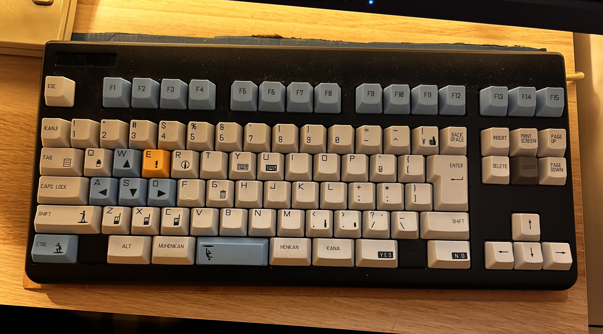
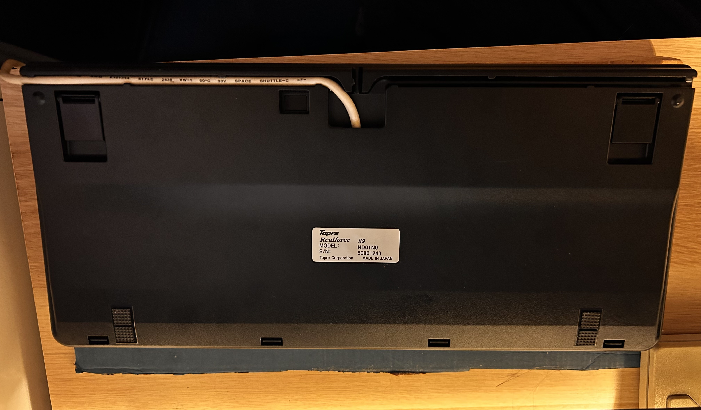
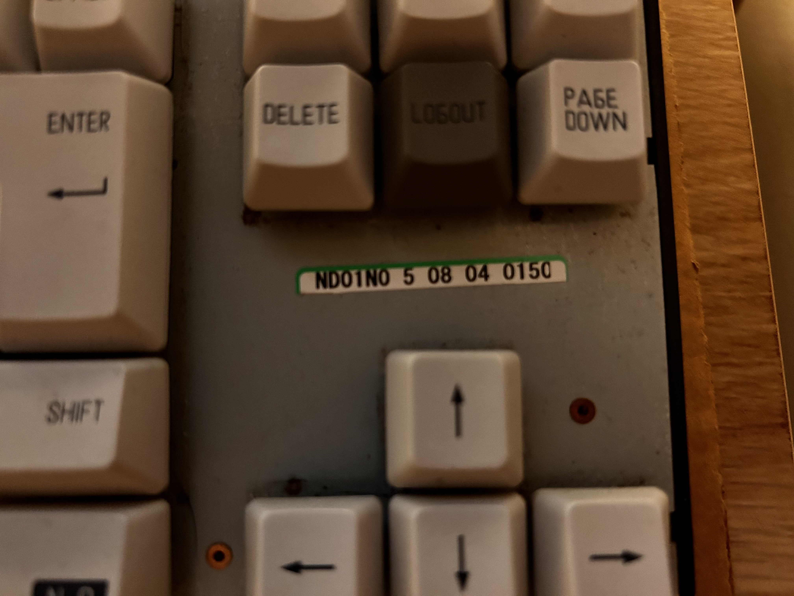
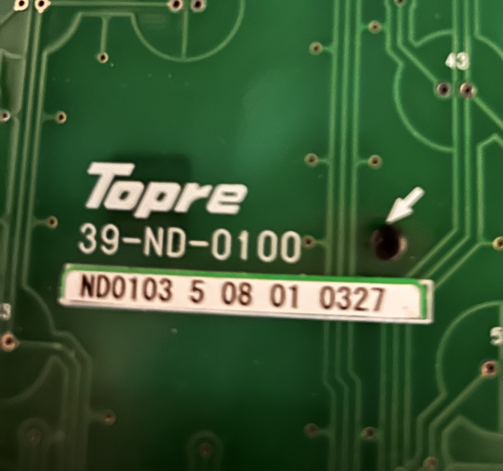

contributing
about
github
contributing
about
github
contributing
about
github
contributing
about
github
89-Key Realforce R1 Keyboard.
The Realforce ND01N0 (also known as "REALFORCE CS NEO") is a modified version of the Realforce 89. It was produced in Fall of 2005 as the keyboard for Namco's LEDZONE CS NEO arcade machines.
Keycaps
The most noticeable deviation from the original Realforce 89 is the white/blue/yellow/grey keycaps with sublegends for Namco's CounterStrike: NEO videogame.
Case colour
The case is black. This makes it the only known Realforce R1 to have a beige cable and a black case.
Corner logo
The Realforce logo in the top left corner of TKL Realforces is left blank. Notably, the Realforce branding is still present on the back sticker.
Layout
The location typically occupied by PrtSc, Scroll Lock and Pause are notably replaced with F13-15. The nav cluster leaves out Home and End in the middle for "PRINT SCREEN" and a grey "LOGOUT" key. Right Alt and Ctrl are also replaced with "YES" and "NO" keys, presumably for navigating a menu inside the game.
Images courtesy of 5qr1.




Image courtesy of game.watch.impress.co.jp.

https://www.4gamer.net/news/history/2005.09/20050903012117detail.html